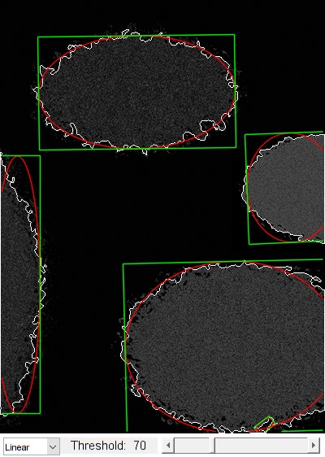

Fit ellipses demo
This program is demonstration for ellipse fitting. The program finds contours and approximate them by ellipses using one of three methods:
- OpenCV's original method which implements Fitzgibbon 1995 method.
- The Approximate Mean Square (AMS) method proposed by Taubin 1991.
- The Direct least square (Direct) method proposed by Fitzgibbon 1999.
Trackbar specify threshold parameter.
White lines are contours points. Red lines are fitting ellipses.
Sources:
function varargout = fitellipse_demo_gui(im) % load source image if nargin < 1 im = fullfile(mexopencv.root(),'test','ellipses.jpg'); src = cv.imread(im, 'Grayscale',true); elseif ischar(im) src = cv.imread(im, 'Grayscale',true); else src = im; end % we expect a grayscale image if size(src,3) == 3, src = cv.cvtColor(src, 'RGB2GRAY'); end % create the UI h = buildGUI(src); if nargout > 0, varargout{1} = h; end end function onChange(~,~,h) %ONCHANGE Event handler for UI controls % retrieve current values from UI controls algIdx = get(h.pop, 'Value'); algs = get(h.pop, 'String'); thresh = round(get(h.slid, 'Value')); set(h.txt, 'String',sprintf('Threshold: %3d',thresh)); % threshold image and find contours bimg = uint8(cv.blur(h.src) >= thresh) * 255; contours = cv.findContours(bimg, 'Mode','List', 'Method','None'); % filter out contours that are too simple, probably not an ellipse % (note: fitEllipse requires at least 5 points) contours(cellfun(@numel, contours) < 50) = []; % {{[x y], [x y], ..}, ..} -> {[x y; x y; ..], ..} contours = cellfun(@(c) cat(1,c{:}), contours, 'UniformOutput',false); % draw all contours points if true cimg = cv.cvtColor(h.src * 0.3, 'GRAY2RGB'); else cimg = zeros([size(bimg) 3], 'uint8'); end cimg = cv.drawContours(cimg, contours, 'Color',[255 255 255]); % for each contour for i=1:numel(contours) % approximate by an ellipse rrect = cv.fitEllipse(contours{i}, 'Method',algs{algIdx}); if max(rrect.size) > min(rrect.size)*30 % skip if rectangle is too tall/wide continue; end % draw ellipse if true cimg = cv.ellipse(cimg, rrect, 'Color',[255 0 0], 'LineType','AA'); else cimg = cv.ellipse(cimg, rrect.center, rrect.size*0.5, ... 'Angle',rrect.angle, 'Color',[255 255 0], 'LineType','AA'); end % draw rotated rectangle of ellipse vtx = cv.RotatedRect.points(rrect); cimg = cv.line(cimg, vtx(1:4,:), vtx([2:4 1],:), ... 'Color',[0 255 0], 'LineType','AA'); end % show result set(h.img, 'CData',cimg); drawnow; end function h = buildGUI(img) %BUILDGUI Creates the UI % parameters thresh = 70; max_thresh = 255; sz = size(img); sz(2) = max(sz(2), 250); % minimum figure width % build the user interface (no resizing to keep it simple) h = struct(); h.src = img; h.fig = figure('Name','Ellipse Fit', ... 'NumberTitle','off', 'Menubar','none', 'Resize','off', ... 'Position',[200 200 sz(2) sz(1)+29]); if ~mexopencv.isOctave() %HACK: not implemented in Octave movegui(h.fig, 'center'); end h.ax = axes('Parent',h.fig, ... 'Units','pixels', 'Position',[1 30 sz(2) sz(1)]); if ~mexopencv.isOctave() h.img = imshow(img, 'Parent',h.ax); else %HACK: https://savannah.gnu.org/bugs/index.php?45473 axes(h.ax); h.img = imshow(img); end h.pop = uicontrol('Parent',h.fig, 'Style','popupmenu', ... 'Position',[5 5 70 20], 'String',{'Linear', 'Direct', 'AMS'}); h.txt = uicontrol('Parent',h.fig, 'Style','text', 'FontSize',11, ... 'Position',[75 5 120 20], 'String',sprintf('Threshold: %3d',thresh)); h.slid = uicontrol('Parent',h.fig, 'Style','slider', 'Value',thresh, ... 'Min',1, 'Max',max_thresh, 'SliderStep',[1 10]./(max_thresh-1), ... 'Position',[200 5 sz(2)-200-5 20]); % hook event handlers, and trigger default start set([h.slid, h.pop], 'Callback',{@onChange,h}, ... 'Interruptible','off', 'BusyAction','cancel'); onChange([],[],h); end